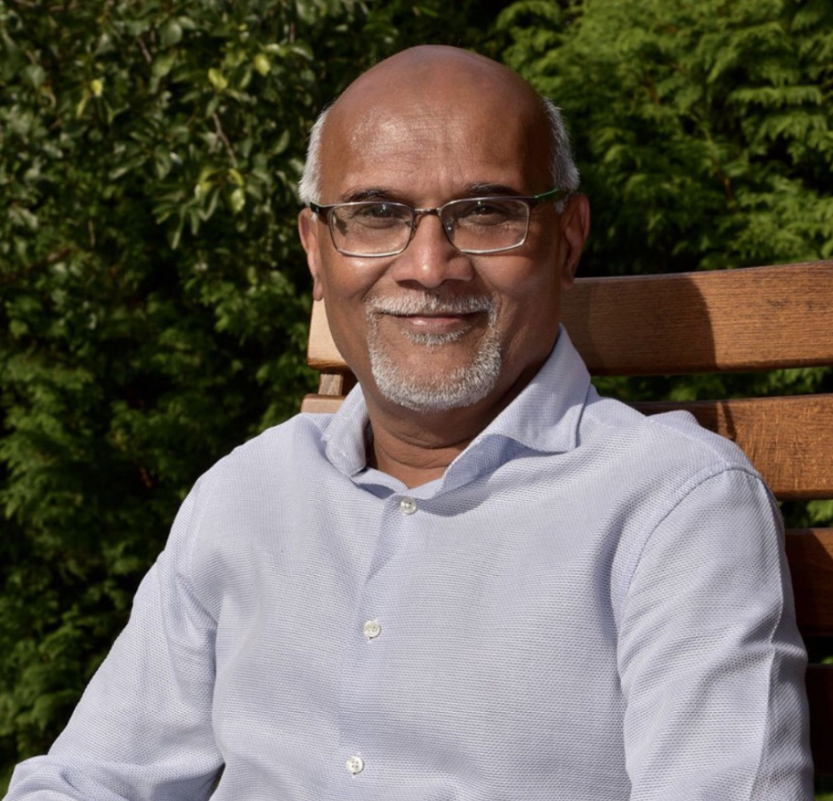
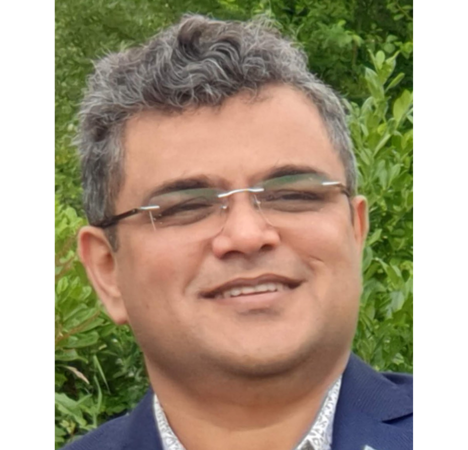
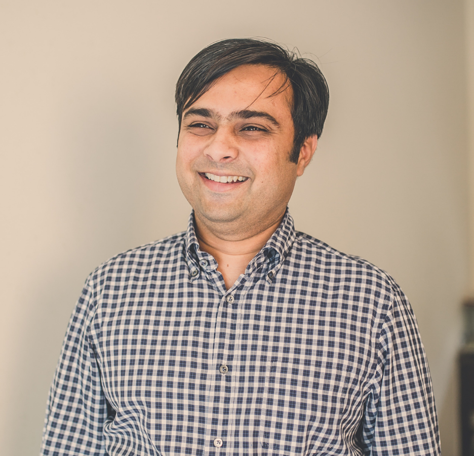
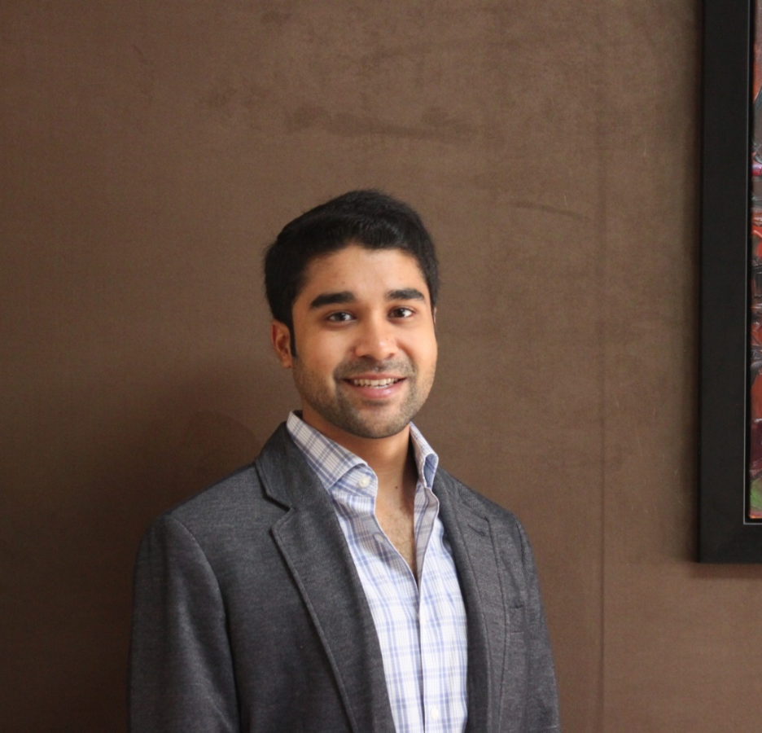
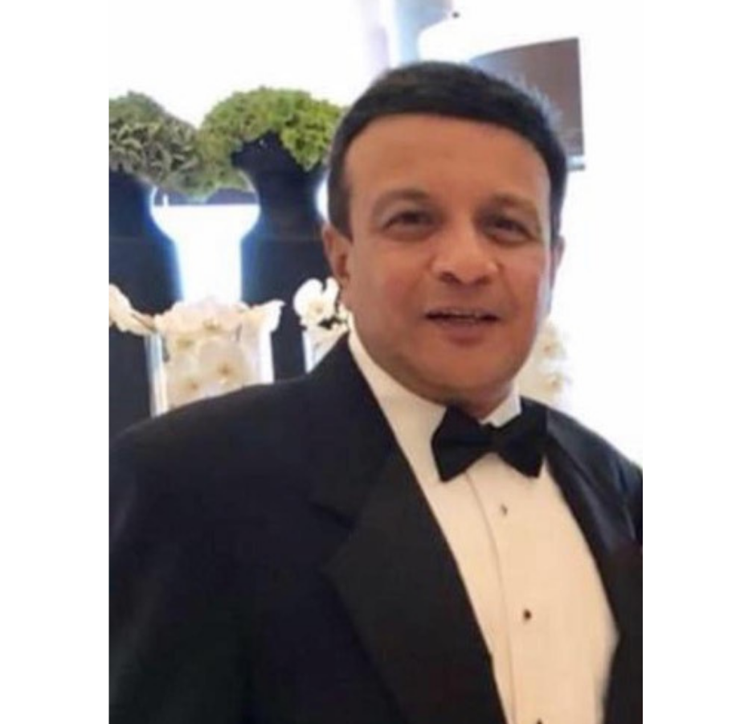

Meet the Mentors
Dewey Lee
Skillsets: Diamond Mining, Diamond Retailing, Strategy, Finance, Corporate Development, Business Analytics, Systems Development
Bio: Dewey is a corporate executive with over 20 years experience in the retail, finance, mining, and consulting industries. Most recently, Dewey was VP, Strategy, Finance and Systems with Forevermark US (De Beers Group) where he oversaw the Strategy & Innovation portfolio of Forevermark US. Prior to that, Dewey was at a merchant bank, Forbes and Manhattan and a diamond miner/retailer, Harry Winston (Dominion) Diamond Corporation.
Skillsets: Diamond Mining, Diamond Retailing, Strategy, Finance, Corporate Development, Business Analytics, Systems Development
Bio: Dewey is a corporate executive with over 20 years experience in the retail, finance, mining, and consulting industries. Most recently, Dewey was VP, Strategy, Finance and Systems with Forevermark US (De Beers Group) where he oversaw the Strategy & Innovation portfolio of Forevermark US. Prior to that, Dewey was at a merchant bank, Forbes and Manhattan and a diamond miner/retailer, Harry Winston (Dominion) Diamond Corporation.
Arpita Mehta
Skillsets: Content Strategy, Brand Development, Partnership Strategy, Copywriting, and Content Creation.
Bio: I'm a digital marketing professional with experience in advertising sales, brand partnerships, and content strategy specializing in women's lifestyle brands, retail, fashion, and beauty. I currently work at theSkimm, and previously have worked at POPSUGAR, Gilt Groupe, and Laundry Service.
Skillsets: Content Strategy, Brand Development, Partnership Strategy, Copywriting, and Content Creation.
Bio: I'm a digital marketing professional with experience in advertising sales, brand partnerships, and content strategy specializing in women's lifestyle brands, retail, fashion, and beauty. I currently work at theSkimm, and previously have worked at POPSUGAR, Gilt Groupe, and Laundry Service.
Anubh Shah
Skillsets: Diamonds, performance marketing, financial modeling, capital raising, supply chain logistics.
Bio: I’m Anubh Shah, co-founder of With Clarity. I have built and scaled the fastest growing jewelry company in the US, per Inc's 500 list, Fast Company & Crain's Fast 50. With Clarity is the only jewelry company that allows people to customize their diamond engagement ring online and try at home through a free, 3D printed home preview. I’m passionate about innovation, automation, scale and growth hacking. I’ve been an operator for 5 years in the diamond jewelry e-commerce industry. Prior to the diamond industry, I was an institutional equities trader at Fidelity Capital Markets.
Skillsets: Diamonds, performance marketing, financial modeling, capital raising, supply chain logistics.
Bio: I’m Anubh Shah, co-founder of With Clarity. I have built and scaled the fastest growing jewelry company in the US, per Inc's 500 list, Fast Company & Crain's Fast 50. With Clarity is the only jewelry company that allows people to customize their diamond engagement ring online and try at home through a free, 3D printed home preview. I’m passionate about innovation, automation, scale and growth hacking. I’ve been an operator for 5 years in the diamond jewelry e-commerce industry. Prior to the diamond industry, I was an institutional equities trader at Fidelity Capital Markets.

Naresh Shah
Skillsets: Manufacturing and marketing
Bio: 44 years in the Antwerp diamond market
Skillsets: Manufacturing and marketing
Bio: 44 years in the Antwerp diamond market
Ayon Roy
Skillsets: Programming, Data Science, Machine Learning, Artificial Intelligence, Python
Bio: Ayon has a distinct passion for problem solving using Data Science, ML, AI & loves to wear the cap of a tech speaker passionately. He has had multiple stints in the field of Data Science,AI,ML through various internships & actively contributes to the society by mentoring hackathons, bootcamps. Till date he has delivered close to 30 technical talks at International as well as National Conferences, Meetups and have also mentored 40+ Global & Local hackathons, open source initiatives etc.Alongside this, he is also the organizer of India's First Kaggle Days Meetup in Delhi NCR and loves to review technical books too.
Skillsets: Programming, Data Science, Machine Learning, Artificial Intelligence, Python
Bio: Ayon has a distinct passion for problem solving using Data Science, ML, AI & loves to wear the cap of a tech speaker passionately. He has had multiple stints in the field of Data Science,AI,ML through various internships & actively contributes to the society by mentoring hackathons, bootcamps. Till date he has delivered close to 30 technical talks at International as well as National Conferences, Meetups and have also mentored 40+ Global & Local hackathons, open source initiatives etc.Alongside this, he is also the organizer of India's First Kaggle Days Meetup in Delhi NCR and loves to review technical books too.

Sanjay Kumar
Skillsets: Enterprise Governance & Controls Information Technology Architecture Information Security Management Data Protection and Privacy IT Compliance and Regulatory Affairs
Bio: Sanjay Kumar is an experienced service-minded and tech-savvy IT Governance, Risk Management, Compliance & Audit professional. He has worked experience in different roles in the IT Services. He has experience in the regulated industry sectors like food, pharma, financial, banking. A trusted mentor and coach for validating the technical architecture and solution designs; to ensure fraud prevention, information security, audit controls and compliance with the regulatory requirements.
Skillsets: Enterprise Governance & Controls Information Technology Architecture Information Security Management Data Protection and Privacy IT Compliance and Regulatory Affairs
Bio: Sanjay Kumar is an experienced service-minded and tech-savvy IT Governance, Risk Management, Compliance & Audit professional. He has worked experience in different roles in the IT Services. He has experience in the regulated industry sectors like food, pharma, financial, banking. A trusted mentor and coach for validating the technical architecture and solution designs; to ensure fraud prevention, information security, audit controls and compliance with the regulatory requirements.
Era Bushati
Skillsets: Social media management and marketing, web production, community management, writing, editing and training others in social media best practices
Bio: I have 5+ years experience in the social media field, have lived in 7 cities and 5 countries, and will never turn down a slice of cheesecake.
Skillsets: Social media management and marketing, web production, community management, writing, editing and training others in social media best practices
Bio: I have 5+ years experience in the social media field, have lived in 7 cities and 5 countries, and will never turn down a slice of cheesecake.
Simoni Shah
Skillsets: Certified diamond sales, product development, jewelry design and manufacturing.
Bio: Hey! My name is Simoni and I've been working in the industry since 2013. My family who have been in the industry for over 40 years, specializes in Marquise, Pear Shape and Oval diamonds. I used to head the certified sales department and managed all the marketing for the company. Alongside, I created custom diamond jewelry for clients in terms of engagement rings, bridal rings, fashion jewelry and one off pieces. I then moved to India in 2018 and started to work in jewelry manufacturing with my husband's family. I work in product development, design and e-commerce. I also launched my own brand where I specialize in affordable trendy diamond jewelry.
Skillsets: Certified diamond sales, product development, jewelry design and manufacturing.
Bio: Hey! My name is Simoni and I've been working in the industry since 2013. My family who have been in the industry for over 40 years, specializes in Marquise, Pear Shape and Oval diamonds. I used to head the certified sales department and managed all the marketing for the company. Alongside, I created custom diamond jewelry for clients in terms of engagement rings, bridal rings, fashion jewelry and one off pieces. I then moved to India in 2018 and started to work in jewelry manufacturing with my husband's family. I work in product development, design and e-commerce. I also launched my own brand where I specialize in affordable trendy diamond jewelry.
Anshal Shah
Skillsets: Diamond manufacturing, Business Analysis, Technology, SQL, XLS, Finance.
Bio: Before joining the Diamond & Jewelry industry, I was working in Corporate America at one of the big banks. I had a brief stint in Ops & 5 years as a Business Analyst in their Fund Services division. I have a great understanding of the nuances of corporate life as well as the challenges of running your own business!
Skillsets: Diamond manufacturing, Business Analysis, Technology, SQL, XLS, Finance.
Bio: Before joining the Diamond & Jewelry industry, I was working in Corporate America at one of the big banks. I had a brief stint in Ops & 5 years as a Business Analyst in their Fund Services division. I have a great understanding of the nuances of corporate life as well as the challenges of running your own business!
Eric Robertson
Skillsets: Product discovery, design and development. Creative direction and marketing. Social media campaigns. Experience-based retail. Project management. Customer experience. Data analytics. Business intelligence & business case development. Supply chain management
Bio: Hi! I lead product vision and development at Everledger for all the big ideas that benefit the jewelry industry. Our platform harnesses the benefits of blockchain and artificial intelligence to streamline compliance, foster sustainability, and surface richer information around responsible sourcing. I was previously the Creative & Marketing Director at Seattle's Green Lake Jewelry Works, where we elevated the brand into a new category with sustainable, mine-to-market gold and gemstones. I’ve also served on the advisory board to the Mercury Free Mining Project and written for several jewelry trade publications.
Skillsets: Product discovery, design and development. Creative direction and marketing. Social media campaigns. Experience-based retail. Project management. Customer experience. Data analytics. Business intelligence & business case development. Supply chain management
Bio: Hi! I lead product vision and development at Everledger for all the big ideas that benefit the jewelry industry. Our platform harnesses the benefits of blockchain and artificial intelligence to streamline compliance, foster sustainability, and surface richer information around responsible sourcing. I was previously the Creative & Marketing Director at Seattle's Green Lake Jewelry Works, where we elevated the brand into a new category with sustainable, mine-to-market gold and gemstones. I’ve also served on the advisory board to the Mercury Free Mining Project and written for several jewelry trade publications.
Kunal Hingorani
Skillsets: Negotiating, pricing analysis
Bio: Real estate entrepreneur
Skillsets: Negotiating, pricing analysis
Bio: Real estate entrepreneur
Nilesh Sheth
Skillsets: Diamond & Industry Analysis, Marketing and some programming.
Bio: A computer science graduate running a diamond business since 1987 in NY. Passionate about the industry and it's growth potential. Looking forward to helping our trade add value to what we sell and to educate today's consumer. I have been involved in the industry and various associations such as IDCA, JBT, DDC & NCDIA to achieve these goals.
Skillsets: Diamond & Industry Analysis, Marketing and some programming.
Bio: A computer science graduate running a diamond business since 1987 in NY. Passionate about the industry and it's growth potential. Looking forward to helping our trade add value to what we sell and to educate today's consumer. I have been involved in the industry and various associations such as IDCA, JBT, DDC & NCDIA to achieve these goals.

Sunay Gandhi
Skillsets: diamond manufacturing, jewelry manufacturing, e-commerce, computer science, data science, sales, digital marketing, software engineering
Bio: 20 years in the Diamond & Jewelry Industry. Love to combing my work and my passion for information technology.
Skillsets: diamond manufacturing, jewelry manufacturing, e-commerce, computer science, data science, sales, digital marketing, software engineering
Bio: 20 years in the Diamond & Jewelry Industry. Love to combing my work and my passion for information technology.
Thomas Gelb
Skillsets: Gemology, business strategy and operations management
Bio: I am the Business Development Director for Newby Teas, a luxury English tea company, and I am responsible of the Brand's expansion and establishment to North America. I'm a Michigan State Alum, traveler, dancer, and dog lover!
Skillsets: Gemology, business strategy and operations management
Bio: I am the Business Development Director for Newby Teas, a luxury English tea company, and I am responsible of the Brand's expansion and establishment to North America. I'm a Michigan State Alum, traveler, dancer, and dog lover!
Vivek Pandya
Skillsets: Project Management, Data Analytics, Business Analysis
Bio: I started in the jewelry wholesale industry after graduating from NYU Stern in 2011. I decided to move to Mumbai and set up a manufacturing unit with the focus of catering to the Indian retail sector. I've had the opportunity to learn everything that goes into make a piece of jewelry and selling it and servicing that sale while setting up this business in India. After 8 years in India, I moved back to NYC in 2019 to join the family business which is also in the jewelry wholesale industry.
Skillsets: Project Management, Data Analytics, Business Analysis
Bio: I started in the jewelry wholesale industry after graduating from NYU Stern in 2011. I decided to move to Mumbai and set up a manufacturing unit with the focus of catering to the Indian retail sector. I've had the opportunity to learn everything that goes into make a piece of jewelry and selling it and servicing that sale while setting up this business in India. After 8 years in India, I moved back to NYC in 2019 to join the family business which is also in the jewelry wholesale industry.

Shrenil Bhansali
Skillsets: Strategy, Leadership, Diamonds as a product, Investing (to an extent)
Bio: I originally worked in the equity markets at Barclays covering Clean Technology and Renewables following University in the United States. Now I work in our family's business where we manufacture rough diamonds into one of a kind polish diamonds to ultimately sell into the global markets.
Skillsets: Strategy, Leadership, Diamonds as a product, Investing (to an extent)
Bio: I originally worked in the equity markets at Barclays covering Clean Technology and Renewables following University in the United States. Now I work in our family's business where we manufacture rough diamonds into one of a kind polish diamonds to ultimately sell into the global markets.
Parag Shah
Skillsets: Logistics, Diamond grading, Self motivation and teaching which seems to be a lost art
Bio: I have officially been in wholesale diamond business for 30 years specializing in melee and later in GIA graded single stones. I also help clients fulfill their ideas by making custom jewelry by hand or CAD. I also have some background in Finance and Investing.
Skillsets: Logistics, Diamond grading, Self motivation and teaching which seems to be a lost art
Bio: I have officially been in wholesale diamond business for 30 years specializing in melee and later in GIA graded single stones. I also help clients fulfill their ideas by making custom jewelry by hand or CAD. I also have some background in Finance and Investing.
Meena Neti Amin
Skillsets: Brand Marketing Strategy, Initiative and Campaign Planning, Digital Media Strategy, Social Media Marketing and Content Planning (Organic and Paid), Influencer Marketing and Partnerships, Retail Marketing and Coop Strategy, Media Planning
Bio: Hi! My name is Meena and I am excited to be a Mentor. Personally, I am from California but have spent the last decade of my life working and living in New York. I am an eternal optimist and my vision of success is living a balanced and fulfilled life. I love organizing, styling, baking, and running/spinning. Professionally, I have spent my career in Marketing, across the luxury fashion, beauty, and CPG/FMCG industries. My expertise is in driving brand awareness and customer acquisition through innovation omni-channel marketing plans across paid, owned, and earned channels, with a focus on social and digital media, influencer and affiliate programming, and strategic brand and content partnerships. I have worked for both established global brands and high growth retail startups, so I am as comfortable with process as I am creating one from the ground up.
Skillsets: Brand Marketing Strategy, Initiative and Campaign Planning, Digital Media Strategy, Social Media Marketing and Content Planning (Organic and Paid), Influencer Marketing and Partnerships, Retail Marketing and Coop Strategy, Media Planning
Bio: Hi! My name is Meena and I am excited to be a Mentor. Personally, I am from California but have spent the last decade of my life working and living in New York. I am an eternal optimist and my vision of success is living a balanced and fulfilled life. I love organizing, styling, baking, and running/spinning. Professionally, I have spent my career in Marketing, across the luxury fashion, beauty, and CPG/FMCG industries. My expertise is in driving brand awareness and customer acquisition through innovation omni-channel marketing plans across paid, owned, and earned channels, with a focus on social and digital media, influencer and affiliate programming, and strategic brand and content partnerships. I have worked for both established global brands and high growth retail startups, so I am as comfortable with process as I am creating one from the ground up.
Megan Kothari
Skillsets: Jewelry manufacturer, PR, Building a Brand, Customer Service, Brand Marketing
Bio: Hi everyone! I'm the founder of AARYAH, a demi fine jewelry brand and co-founder of NOTA, a bespoke bridal brand based in NYC. In my past life, I was a beauty marketer working with some of the biggest beauty brands in the industry.
Skillsets: Jewelry manufacturer, PR, Building a Brand, Customer Service, Brand Marketing
Bio: Hi everyone! I'm the founder of AARYAH, a demi fine jewelry brand and co-founder of NOTA, a bespoke bridal brand based in NYC. In my past life, I was a beauty marketer working with some of the biggest beauty brands in the industry.
Rhea Kothari
Skillsets: Sustainability, Content Strategy, Brand Development, Copywriting, E-commerce, Marketing, Social Media Management
Bio: I'm the co-founder of The Mend, a sustainable packaging company. I work on our company's marketing initiatives, with a focus on our advertising, sales and content strategy. I also have 3+ years of experience in the jewelry industry, with expertise in product development and e-commerce.
Skillsets: Sustainability, Content Strategy, Brand Development, Copywriting, E-commerce, Marketing, Social Media Management
Bio: I'm the co-founder of The Mend, a sustainable packaging company. I work on our company's marketing initiatives, with a focus on our advertising, sales and content strategy. I also have 3+ years of experience in the jewelry industry, with expertise in product development and e-commerce.

Ameesh Mehta
Bio: President of Diamond Sales at Jewelex, one of the largest vertically integrated manufacturers and wholesalers of diamonds and jewelry. 30+ years of experience within the rough, polish, and diamond jewelry industries working with clients across the world in key markets across Asia, North America, and Europe.
Bio: President of Diamond Sales at Jewelex, one of the largest vertically integrated manufacturers and wholesalers of diamonds and jewelry. 30+ years of experience within the rough, polish, and diamond jewelry industries working with clients across the world in key markets across Asia, North America, and Europe.
Ana Wright
Skillsets: Very passionate about the jewelry industry. Proficient in jewelry merchandising and business development with in the diamond and jewelry industry.
Bio: I am in the diamond and jewelery trade for over 30 years.
Skillsets: Very passionate about the jewelry industry. Proficient in jewelry merchandising and business development with in the diamond and jewelry industry.
Bio: I am in the diamond and jewelery trade for over 30 years.
Anvesh Jallapally
Skillsets: Programming, Performance Marketing
Bio: 17 Yrs of experience in IT and Software development
Skillsets: Programming, Performance Marketing
Bio: 17 Yrs of experience in IT and Software development